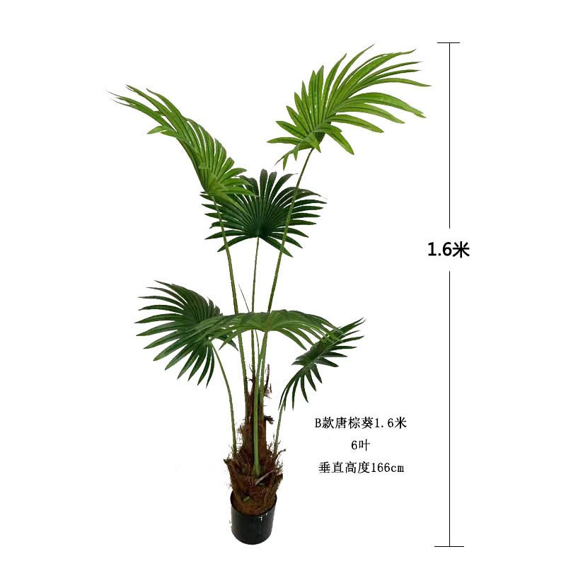
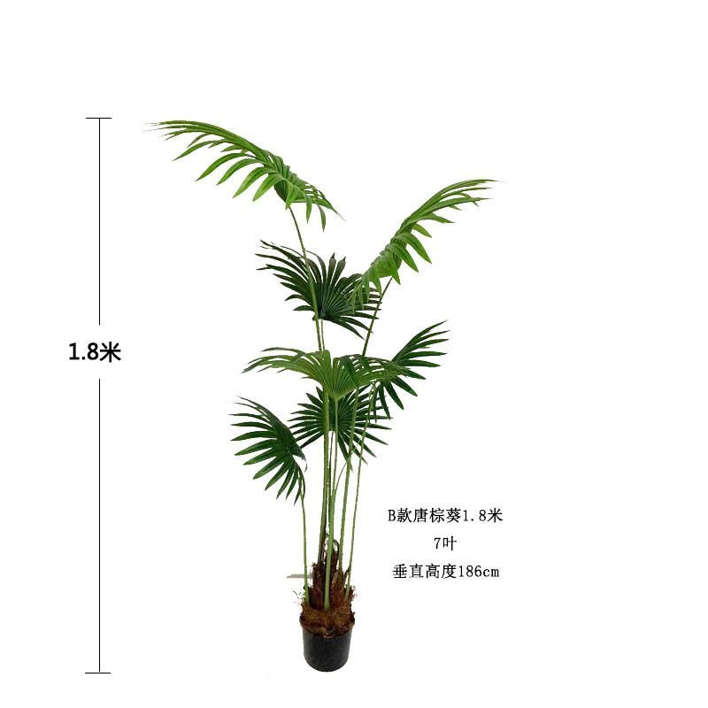

Palms & Tropicals
Washingtonia Palm, Style B
Washingtonia Palm, Style B is a tropical focal point suitable for hotel lobbies, resorts, and large indoor planters. This is a factory photograph of the actual product; exact dimensions, packing, MOQ, lead time and price are confirmed by the seller on inquiry.
Opens your email application; sending happens there.
Product information
Washingtonia Palm, Style B is a tropical focal point suitable for hotel lobbies, resorts, and large indoor planters. This is a factory photograph of the actual product; exact dimensions, packing, MOQ, lead time and price are confirmed by the seller on inquiry.
Specifications
| Product code | LC-N015 |
|---|